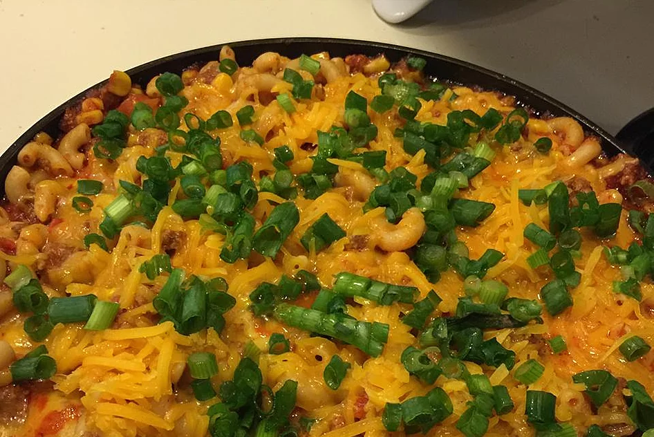

Family Favorite Chili Mac&Cheese

Chili Mac&Cheese tastes like your family favorite Chili - with the added cheesy goodness.
I’m not above doing mash ups. I’ll do them when combining two recipes brings something else to the dish,
rather than doing them just for the sake of being “cool” or “out there”. I’m beyond the years of playing with food for the sake of being trendy,
I just want it to be tasty!
So – Chili Mac and Cheese. A cross between Chili and Mac and Cheese, all made in one pot.
The sauce flavour is like beef Chilli Con Carne, with the addition of macaroni and cheesy goodness stirred into it as well as on top.
So – Chili Mac and Cheese. A cross between Chili and Mac and Cheese, all made in one pot.
The sauce flavour is like beef Chilli Con Carne, with the addition of macaroni and cheesy goodness stirred into it as well as on top.
- 8 ounces elbow macaroni
- 1 pound lean ground beef
- 1 (24 ounce) jar Ragu® Old World Style®
Traditional Pasta Sauce
- 1 ½ tablespoons chili powder
- 1 teaspoon ground cumin
- 1 (14.5 ounce) can diced tomatoes
with green chile peppers
- 1 (15.25 ounce) can whole kernel corn, drained
- 1 ½ cups shredded Cheddar cheese, divided
- Chopped green onions, for garnish
Steps
- Cook and drain the elbow noodles
according to the package directions; set aside.
- Brown the beef in a large skillet over
medium heat. Drain excess grease.
Stir in the Ragu® Sauce, chili powder,
cumin, tomatoes and corn.
Bring to a boil over medium high heat,
cover,reduce to low and let simmer
for 10 minutes.
- Stir in the cooked noodles and 1 cup of
the cheese until melted and heated
through. Sprinkle the rest of the
cheese evenly over top, heat on low
until melted. Serve immediately.
Home Page
Return To Top
Chicken Bruschetta
Pasta Pauce with Italian Sausage